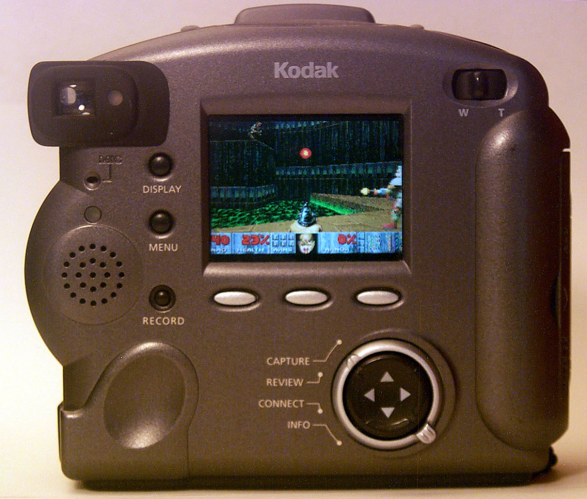

Lumpy old Kodak digital cameras? Yeah, they run Doom.
This port was by a bunch of folks who also ported MAME to Digita OS, a digital camera operating system used in the late 90s/early 2000s that apparently had such an impact on the world of computing that not even Wikipedia seems to have an article about it.
If you’ve had the (mis?)fortune of messing with this, lemme know how it went!